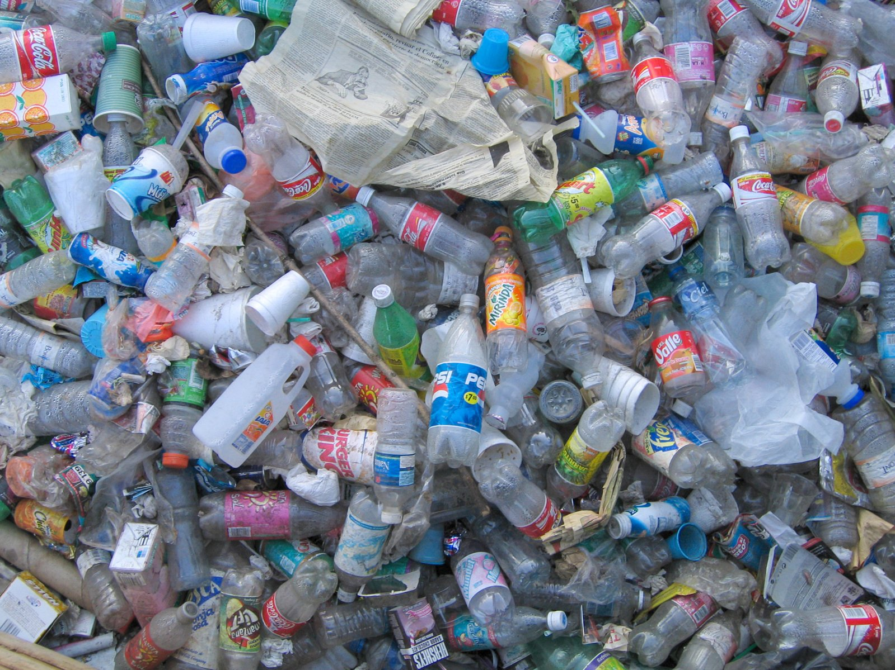
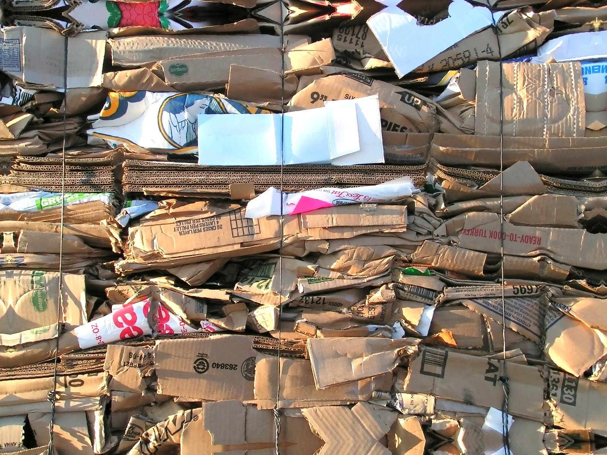
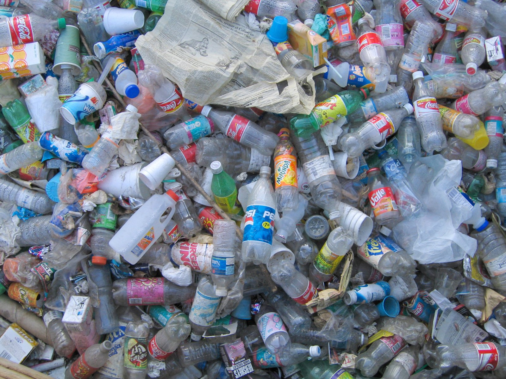
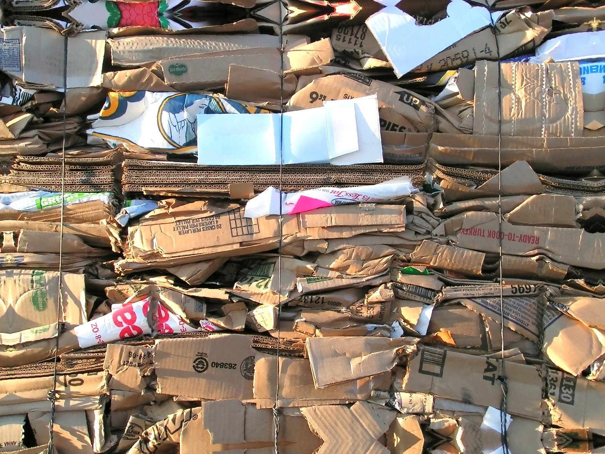

Les différentes poubelles ou conteneurs de tri sélectif
On dispose de différentes poubelles à la maison pour trier ses déchets, à savoir : la poubelle jaune, la poubelle verte, la poubelle bleue, la poubelle ordinaire (couvercle marron, bordeaux). Poubelle jaune La poubelle jaune contient des :
- bouteille plastique : eau minérale ou gazeuse, sodas, jus de fruits ; bouteilles de lait ;
- flacons plastiques de produits d'hygiène et de beauté (gel douche, bain moussant) ;
- flacons et bidons plastiques concernant les produits d'entretien (lave-vitres, produit * nettoyant) ;
- boîtes en carton et briques alimentaires sur emballages en carton (jus de fruits, soupe, * boîtes de gâteaux, emballage de yaourts) ;
- boites de conserve en fer, canettes, bidons de sirop, boîte d'aliment pour animaux ;
- désodorisants, mousses à raser, barquettes en aluminium, laques pour cheveux.